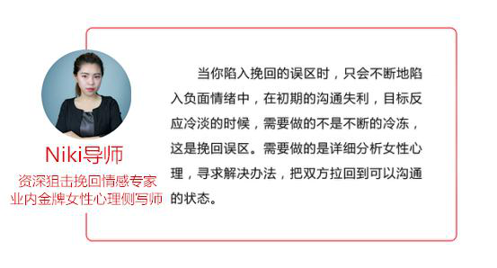
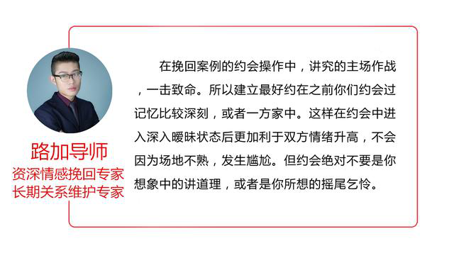

官方二维码
免费情感热线电话
4006-299-520

官方二维码
免费情感热线电话
4006-299-520

大家好，我们是橘子情感。专注情感，为爱而生。 从业八年以来，橘子情感始终秉承着“专注情感、专业服务、专心经营”的原则， 致力于为大家提供挽回爱情、挽救婚姻、 分离小三、订制爱情等两性情感服务。
经团队案例分析组调查，困扰广大挽回学员的最大难点是在分手后不断地去进行骚扰，以至目标反应冷淡，甚至被拉黑断联后，怎么建立初期的联系，怎么快速扭转目标对你的态度，达到有效的沟通状态。
其实这世界上最难的两件事就是：一是把自己的思想装进别人的脑袋里;二是把别人的钱装进自己的口袋里。挽回就属于第一种，但直接阐述你的想法，让目标认可、甚至执行，目的性太强，在对方抵触你的同时，想要做到这点无疑是痴人说梦，所以在挽回中的改变对方是需要更强的计划性以及步骤性。
其实大家感觉的困难，基本上都是因为没有正确的方式方向，而是通过自己的思维惯性，甚至根据之前对于目标的了解进行的跪舔行为，试图让目标心软进而挽回，导致挽回效果很是一般，甚至适得其反。
每一个案例，双方相处的模式以及双方的性格都是不一样的，所以在我们的团队的高端挽回私人订制服务中针对任何一例计划，都会有行业稀缺资源：女性心理侧写师，详细分析目标情绪，当下状态，以及未来预期，为挽回计划做好坚实的铺垫。
对于女性，我们总会用口是心非，猫性动物来形容，她口中的需求不一定是她真正想要的。很多人的分手就是因为对方想跟你要个梨，你却给了她一箱子苹果。这样的相处模式进行相处自然会发生很多问题，导致感情疲惫，最终分手。
挽回过程，就是改变对方态度的过程。对于直接性的引导大家都是抵触的，本来你想买的手机是iphone突然来了一个推销员拼命跟你讲三星多么好，你会买吗？我知道大家的答案基本都会是否定的。如果换一种方式，是长期的利用广告，或者你周遭的人群去影响你，说不定你在潜移默化之中也接受了。所以挽回的计划都是长期的点对点引导，每一步都会有小的计划目标，最终才是挽回成功这样的结果。千万不要试图让对方直接接受你的决定，只会让双方之间关系越来越差。
相信大家也有所体会，在很多关系中，两人的相处无非就是逛街，吃饭，看电影，这些都是情感成本极低的约会行为。这种约会是有持续性，但在过程中肯定也会让双方厌烦，导师组调查多很多学员，基本上90%的学员只记得第一、二次和女朋友的约会细节，其他的全部都忘了。女人肯定也是一样，虽然相处时间长，但留下的回忆节点太少，自然也意味着情感链接弱，这样的感情是经不起折腾的。
其次，很多人总是为女生付出，送过不计其数的礼物，说过很多甜言蜜语逗目标开心。女人得到这些东西的成本太低，男人的可得性太高，长期以往自然让女人失去兴趣，但也给女人养成了一定的依赖。女人对于男人的要求只会越来越高，而身为普通人的男人却很难再去达到物质投资上的质变了。
坚持一段感情不是一件很累的事情，但也需要在过程中不断地加入对未来的憧憬，恋爱关系中最终的憧憬就是婚姻预期，尤其是交往双方年纪偏大的状态下。而受到社会影响，一般提出这个预期，并且主导这个预期的也需要是男方。
【情感链接开启话题法】是在挽回中常用的小技巧，利用之前对方在自己生活中留下的产物，开启话题，能够直接打开双方的倾诉欲望。是典型的浅层次话题开启方法，在挽回的初期，一定要避免聊之前的情感、人生感悟等等深层次的话题，可以判断好双方之间气氛，直接这样开启话题，在过程中推拉打压对方，起到缓解双方气氛的作用。
关于两性之间的情感，其实还有很多的因素会影响最终的事态走向，橘子情感从业多年以来，对于情感挽回和狙击也是自成一套，帮助近万例的男女成功收获幸福。如果您有情感问题，一定要及时采取有效措施解决，不要等到失去了才后悔莫及。
{kind=link}